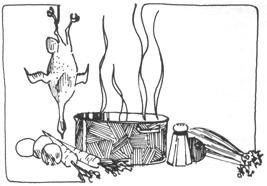
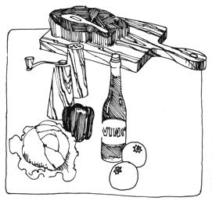
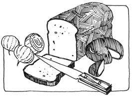
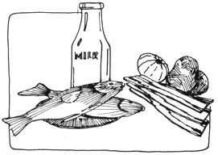

My great-grandmother-who began married life and bore her first six of twelve children in a sod house in Kansas - became a penny-pinching, epicurean cook through necessity coupled with talent.
If great-grandma's pantry contained only a bone, a handful of carrots, a couple of onions and a few potatoes left over from planting . . . she simmered them with half a bucket of spring water and a few magical herbs from her kitchen doorstep till the tantalizing aroma lured workers from the fields and children from play. And if the onions and potatoes were missing (as was often the case), she just braised the carrots and bone with marjoram and bay and gently bubbled them with the dregs of a bottle of ketchup and some water to create a superb carrot soup.
In that spirit, assuming you have all the following ingredients (leftovers or otherwise), here's how to whip up a healthy French country cousin of vichyssoise.
(Good Woman's Thick Soup)
1 chicken carcass or chicken bones with some meat left on them
2 large potatoes, thinly peeled and cut into 1" chunks or unpeeled and cut into 1/2" chunks
2 medium leeks, cut vertically, washed and cut into 1" pieces
1 teaspoon salt
1/2 teaspoon dried or 1-1/2 teaspoons chopped fresh marjoram
1/2 teaspoon dried or 1-1/2 teaspoons chopped fresh basil
1/4 teaspoon coarsely, freshly ground pepper
4 cups water
2 cups milk and salt to taste
Put everything but the milk into a Dutch oven or large kettle. Cover, bring to a boil, reduce heat and simmer one hour. Cool, remove chicken bones, pick off the meat and return it to the kettle. Whizz the soup - two cupfuls at a time - in a blender or whip it vigorously in the pot with an eggbeater till the individual ingredients nearly disappear. Reheat the mixture to just boiling and add the milk. Stir, taste and add more salt if needed.
If you're in a hungry hurry, don't bother with the blender or eggbeater. Just take out the bones and serve the golden, aromatic broth generously filled with bites of chicken, potato and leek with squares of pale green leek tops floating on top. Either way, the soup-with garlic toast, cheese and fresh apples-should make a meal for six people.
But suppose-instead of meat or even bones-you have on hand only half a cup of meat drippings and fat, a lone turnip, the tired core of a former brisk bunch of celery, some leeks and potatoes? Shall you despair of becoming famous for the soup you serve tonight? Not at all . . . rejoice! You have just the very ingredients for:
2 tablespoons meat fat or cooking oil
1 onion, 1 leek or the tops of 2 or 3 leeks, chopped
1 carrot, chopped
1 large potato, thinly peeled and diced or just diced
5 or 6 red radishes or 1 small turnip, diced
4 cups boiling water
1/2 teaspoon salt or as needed
1/8 teaspoon black pepper, freshly ground
1/2 teaspoon dried or 1-1/2 teaspoons minced fresh basil
1 to 2 cups milk
Lightly sauté the onion or the leek in the melted fat or oil till just transparent. Add the other vegetables, meat drippings, water and seasonings. Cover and cook on low heat for 20 minutes. Add the milk and reheat just to steaming. Garnish with chopped, fresh parsley. Serves four to six.
By the way, Virginia, there really is a chicken foot soup. It doesn't have a great deal of flavor but it is protein and calcium-rich. On its own it's a light, little first-course broth and it can become stock for borsch, cabbage soup, turnip chowder or even the famous vichyssoise.
2 pairs of chicken feet
1 stalk of celery with leaves, chopped
1 whole leek, sliced vertically, cleaned and chopped
1 bay leaf
1/2 teaspoon dried tarragon
1/2 teaspoon dried basil
1 teaspoon salt
3 black peppercorns
1 tablespoon white wine or apple vinegar
2 to 3 cups water
Cover the washed chicken feet with boiling water, then take them out one by one; clip off their nails, peel away the skin and put them back into the liquid. Add the vegetables and more water to cover all, bring to a rapid boil, reduce heat and simmer in covered pot for 1-1/2 hours. Serves two or three.
For most purposes, just remove what's left of the feet when the soup is done . . . but for vichyssoise, strain the broth. For a soup or broth with more color and flavor, include the chicken's back and wing tips. For a more filling dish, add one-quarter cup of whole barley, rye grits or brown rice.
The flavor of this soup can also be improved by adding the juice of half a lemon after cooking, at serving time. Garnish with a thin lemon slice in each bowl.
Our Pilgrim foremothers took chicken broth to sick people, fed it to babies and willed it to us. Full of assorted, easily digested proteins, vitamins and minerals it goes to work the moment it enters the body to nourish it, warm the heart, stimulate a healthy appetite and satisfy a weak one.
Put chicken bones, onion and/or leek pieces, about one cup chopped celery with tops, one diced carrot, 1/2 teaspoon each of dried basil, marjoram and tarragon, a teaspoon of salt, three peppercorns, four cups of water and one tablespoon of white wine or apple vinegar into a pot. Cover the container and bring its contents to a boil, then reduce the heat and simmer 1-1/2 hours. Strain the broth through cheesecloth or a fine-mesh strainer. Makes about four cups. For stock, remove the bones, retain the meat and vegetables.
Chill strained broth. Skim off the fat and use it to make gravy. Reheat the broth and serve in bowls with a basket of toast or crackers and thin slices of lemon rafting little sprigs of fresh parsley.
Make either chicken foot soup or the basic chicken broth. Take out the bones. Put in a cupful of chopped cabbage, peeled thinly sliced broccoli stems, chopped mustard greens, kale or a combination of any of these. Cook on medium heat 10 minutes, or until the greens are tender.
When I've already used all the leek or green onion tops in some brave potage or green salad, when the weather turns hot and when something colorful and spicy is coming up later in the meal . . . then I think of vichyssoise. Perhaps its elegance is mostly bravado-a pale potato soup, dressing up and playing Empress-but it does slide coolly down a parched throat. It's good hot, too.
2 tablespoons safflower oil
3 leeks, white part only, minced
1 medium-size white onion, minced
3 large potatoes, peeled and thinly sliced
4 cups clear, strained chicken broth
1-1/2 cups cream, or cream alternate* (directions follow)
Salt and pepper to taste
Sprinkle of mace or nutmeg
About 1 tablespoon chopped chives
Sauté and stir the leeks and onions in the oil for three minutes. Add the potatoes and broth, cover and simmer till tender (about 15 minutes). Puree with eggbeater or blender. Stir in cream or cream alternate, salt and pepper.
Garnish each bowlful with a sprinkling of mace or nutmeg and/or a few pinches of chopped chives.
Vichyssoise is good hot but, to be deliciously authentic, should be served cold. Really chill it . . . one to three hours in the refrigerator or a few minutes in the freezer.
A skillful, penny-pinching epicure can bless several meals with one chicken. First meal: fried drumsticks, thighs and wings; second meal: the precooked breasts in chicken pie, in a salad, with curried rice or creamed on buttermilk biscuits; third: a potage made with stock from bones of the above pieces plus neck and back; fourth: Creme Caroline, a soup made with a stock from the giblets and any chicken morsels left.
2 shallots or white parts of 3 or 4 green onions (use the green tops in a salad to go with the soup)
2 cups stock made of chicken gizzard and heart, neck & back simmered with celery, onion, bay leaf, tarragon, salt & pepper
Chopped gizzards and hearts plus meat from neck and back (1/2 to 1 cup of meat altogether)
1 teaspoon additional tarragon leaves
1 cup coffee cream
Assemble all the ingredients except the cream in a heavy, covered kettle. Bring to a boil, reduce heat to low and simmer for 20 minutes. Stir in the cream slowly so it won't curdle. Serve at once, to two people.
2 tablespoons chicken fat or oil
1 small onion, diced
2 small white turnips, diced
1 medium-size potato, peeled and diced
2 cups chicken stock, or giblet stock as in Creme Caroline
2 cups milk
salt to taste
Gently saute and stir the onion in the fat until the diced pieces are transparent. Add, and continue to stir and fry the turnips till they're lightly browned. Add the potatoes and stock, bring to a boil, reduce heat and simmer covered 10-15 minutes. Stir in milk and reheat to simmering, taste and add salt and pepper as necessary.
Turnip chowder can also be made with veal or pork stock, or-lacking any stock or bones-bacon or salt pork. Brown the diced bacon or pork, strain out the solid pieces and reserve for a garnish. Saute the onions and turnips with a sprinkling of thyme or marjoram (1/4 to 1/2 teaspoon). Add potatoes, one teaspoon salt and two cups (or enough to cover all) boiling water. Simmer with a lid on the kettle for 15 to 20 minutes, then stir in one cup milk. Let rest, covered, off heat for 5 minutes. Serves four.
* Cream Alternate: one cup instant powdered mixed with one cup whole milk. This cuts down the cost of the soup, while maintaining its consistency and flavor . . . and cholesterol counters can eat the vichyssoise with assurance. You can also use half-and-half cream as an alternative.
When sorrel-the "sour grass" with spearhead leaves-is growing abundantly, one can vary the menu with a green soup made with unstrained stock from veal bones, chicken foot soup or basic chicken stock (dark green lettuce leaves can be used with the sorrel).
2 tablespoons cooking oil
2 or 3 green onions, thinly sliced
4 cups stock or broth
1 large potato, peeled and shredded
1 cup tightly packed washed, chopped sorrel leaves
1 teaspoon salt
Stir and sauté the onions lightly in the oil for three minutes. Add the stock and shredded potato, bring to a boil and simmer-uncovered-for five minutes. Add the sorrel, cover and cook one minute (the grass should be limp but still flavorful). Serves four.
Whenever I make a pumpkin pie, I always seem to wind up with more pulp than the recipe calls for. Here are two ways to use up one-half or one cup of pumpkin most deliciously:
1 cup canned or cooked pumpkin purée
2 cups rich chicken stock with meat from the bones
2 tablespoons potato flour or cornstarch
1 cup milk or half-and-half
1 tablespoon chopped fresh parsley
Salt to taste
Blend together and heat the pumpkin and chicken stock. Mix the potato flour or cornstarch with a little of the milk or cream and add it to the soup as you stir. Continue stirring and, as the mixture thickens, slowly pour in the remaining milk or cream. Salt to taste and garnish each bowlful with a pinch or two of parsley. Serves four.
1/2 cup pumpkin purée
2 bouillon cubes dissolved in 1/2 cup boiling water
2 cups milk
1/2 teaspoon tarragon, dried
1/2 to 1 teaspoon curry powder
1 tablespoon fresh parsley
Blend all the ingredients and heat just to steaming but do not boil. Cover, remove from heat and let rest three to five minutes. Serves two, in cups.
For soups and stews featuring beef bones, the neck bones and shank rounds are number one. They have enough meat on them to provide the main course for a meal as well as to "beef-up" the soup stock. The shank rounds can serve as mini-pot roasts, yielding as a bonus a rich, gelatiny stock containing calcium and marrow from the bones' centers.
Beef loves spices (cloves, cumin seeds, coriander) and heartily flavored herbs (especially garlic, marjoram or oregano and bay). It also responds to the tenderizing and flavoring of red wine or wine vinegar.
2 lbs. each beef neck bones and shank rounds
2 onions, quartered
3 to 5 carrots, cut into 1" pieces
3 celery stalks, cut into 1" pieces
2 fat cloves of garlic, whole
2 bay leaves
4 to 6 cloves
6 peppercorns
1 teaspoon dried marjoram leaves
3 teaspoons salt
6 cups water
1/4 cup wine vinegar or 1/2 to 1 cup red wine
4 large potatoes, peeled and halved
Heat your largest, heaviest kettle or Dutch oven and grease the bottom by rubbing it with the fattest side of a shank round. Add a little oil if necessary and brown the shank rounds, then the neck bones. Then put in one-third of the vegetables (but no potatoes) and all the spices and herbs. Pour the water and wine over all.
As soon as the liquid boils, reduce the heat, add the remaining vegetables (except for the potatoes) and cook the rich mixture for three to five hours. By then the meat will have left the bones, the gristle melted into the broth and the calcium will have leached out of the bones and into the stock. During the last hour of cooking, add a potato and salt to the pot for each person expected for dinner.
When the potatoes are tender, take them out with a large spoon and use a slotted spoon to put the meat on a platter.
With three tablespoons of the fat from the top of the stock, three tablespoons of flour, a cup of the broth and about one-half teaspoon of additional salt, make a gravy to go with the potatoes.
Serve the remaining stock as soup, or reserve it-along with any leftover meat-to use in a future soup.
2 tablespoons butter or margarine
1 carrot, shredded
1 onion, diced
5 or 6 young beets with tops, or 1 small can diced beets
2 cups beef stock or 1 can beef consommé
1 raw potato, finely diced
1 teaspoon marjoram
1 tablespoon fresh, chopped parsley
1 teaspoon salt
1/2 cup sour cream
Lightly sauté the carrot and onion in the butter. Add everything else except the cream. Bring to a boil, reduce heat, simmer covered for 20 minutes, stir, ladle into bowls and garnish each with a dollop of sour cream. Serves three or four.
Lightly saute:
2 tablespoons cooking oil
1 onion, chopped
1 clove of garlic, sliced
Add to the above:
4 cups beef stock
4 peeled and chopped or 1 can stewed tomatoes
1 cup leftover beans or 1 can mixed salad beans
1/2 cup macaroni or spaghetti (uncooked)
1 teaspoon Italian herbs
1/2 cup each chopped cabbage and celery with tops
Bring to a boil, reduce heat, simmer covered about 15 minutes, taste and add salt & herbs as needed.
During the last 5 minutes you can add bits of leftover vegetables such as whole kernel corn, zucchini, peas or green beans. The herbs and a few minutes simmering will marry all the flavors. Serves eight.
Of course, it's possible to make any of these potages and soups-or at least a pale-flavored and less nourishing version-with a bouillon cube and a cup of water in place of each cup of stock. It's also possible to add a little more flavor and some nourishment by browning bacon or salt pork, sautéing the onion in the fat and putting the browned meat bits back into, or onto, the soup.
You probably also know that a handful of oatmeal thickens and adds protein to meatless potages and stews and that soy flour-stirred into a little of the liquid, then into the pot-absorbs floating fat and adds protein.
But to really give soul to a soup, you must always add a little meat, gelatin from dissolved gristle and calcium from bones. It doesn't take much else, in a pinch, to produce a masterpiece.
For instance, if you have a bone, an onion and a handful of herbs, a hunk of some pale-looking dried-up cheese and a few slices of stale French or sourdough bread . . . you have all you need to make a dish so tantalizing in aroma, so friendly to the palate and so satisfying to the body and spirit of mankind that people in Paris go down before daybreak to the messy, noisy, busy wholesale vegetable market-Les Halles-to get it.
2 tablespoons cooking oil or meat fat
1 very large or 2 medium onions, sliced
Bones from two veal steaks, pork chops or whatever, with leftover meat
6 cups water
1 bay leaf
1 teaspoon dried or 1-1/2 teaspoons fresh marjoram, minced
Toasted day-old bread, one slice for each bowl
1/2 cup grated cheese
Brown the onions while stirring them in oil on medium heat. If some of the strands blacken, don't worry. This soup is good no matter what happens to it, short of overheating the grease or burning all the onions. (If you sprinkle the marjoram on the onions while browning you can enjoy the aroma as you stir.) Add all the other ingredients, except bread and cheese. Cover the kettle and simmer 25 minutes or so. Remove bones, detach meat and put it (the meat) back into the broth.
Place a slice of lightly toasted bread topped with cheese into each bowl and proudly ladle the soup over it. Voila! Serves three or four.
Onion soup can be made with either chicken or strained beef stock. It also gets along quite well without the cheese, or when thickened by sprinkling two or three tablespoons of flour over the onions as they finish browning. You can even enjoy another variation by adding one-half to three-quarters cup of cream to the basic recipe.
Any fisherman or fish market will usually give you all the fish heads you will carry away. To two pounds of the heads, tails and bones, add:
4 to 6 cups of water
1 large bay leaf
1/2 teaspoon dried basil leaves
1 onion or leek, chopped
1 stalk diced celery or 1/2 teaspoon celery seed
1 teaspoon salt
4 peppercorns or 1/4 teaspoon freshly ground pepper
1 tablespoon white wine vinegar or apple vinegar
Bring everything to a boil, reduce heat and simmer covered till the meat falls off the fish bones at a touch. Then strain the stock through cheesecloth or a fine-mesh strainer and throw away whatever's left after straining (all the flavor and nourishment is in the stock now).
To this stock add:
3/4 cup tomato juice (6 oz. can)
2 small cloves of minced garlic
1 large potato, cut into thin slices
Cook the whole mixture 10 minutes or until the potatoes are tender and-with a slotted spoon-remove the potato slices to a warmed platter.
Keep the plate warm while you slip an egg into the broth for each person. Poach the eggs, tenderly lift them out, arrange them with the potato slices and garnish the platter with fresh parsley sprigs. Chop up some more sprigs and sprinkle them on the soup after it is poured into bowls, over slices of toast.
2 tablespoons oil or 2 or 3 slices bacon or 2 oz. diced salt pork
1 large onion, diced
2 cups (1 or 2) potatoes, peeled and diced
1 pound fish fillets (cod, perch or halibut) cut into 1" pieces
2 cups water
1 teaspoon salt
2 cups milk
3 drops hot sauce
Brown and reserve bacon or salt pork, then gently fry the onion in the pork fat or oil. Add the potatoes, water, salt and fish chunks, bring to a boil, cover and simmer on low heat 20 minutes (or till fish flakes easily with a fork and potatoes are tender). Add the milk and hot sauce. Garnish with bacon or salt pork bits, or-if you began with oil-sprinkle the soup with minced fresh parsley or basil leaves.
A bouillabaisse needs three categories of ingredients and-if you improvise within these categories-you'll be keeping faith with epicurean French seaport soup-making (and eating well for next to nothing if you can harvest your own seafoods).
(1) The bouillee: oil (olive pre ferred), green peppers, celery and-absolutely-tomatoes.
(2) The herbs: marjoram, basil, thyme (fresh if you have even a pot and window sill garden).
(3) The fishes: the traditional ideal collection is (a) a rock fish, (b) a bottom feeder, (c) assorted free swimmers put in whole if too small to fillet and (d) various shellfish. You may use red snapper, halibut, sea perch, sea trout, sea bass, cod-or any available combination--with crab or lobster and mussels or clams, scrubbed and in their shells.
FIRST, PREPARE THE SEA CREATURES. Scrub the clams and-if you dug them yourself-keep them in clean sea water 24 to 48 hours while they spit out the sand they contain. (You can encourage this cleansing by feeding the clams a handful of cornmeal or oatmeal each morning, after changing their water. Or hang them in a mesh bag from a dock or tow them behind your boat for two days.) As long as the mollusks close their shells when you touch them, they're alive, alive, oh! and edible.
A rock crab is killed by dipping it in rapidly boiling water (hold it by the shell, so that its claws can't grab you). Pull off the back, wash the "mustard" out, break the body in half and pull off the claws.
Clean small fish and scale or skin, clean and fillet the large ones. Cut the fillets into serving-size pieces.
SECOND, PREPARE THE VEGETABLES AND ASSEMBLE THE HERBS. Trim the stem end out of the green pepper and cut the vegetable into 1" pieces. Briefly immerse the whole tomatoes in boiling water and then remove their loosened skins.
THIRD, ASSEMBLE THE BOUILLABAISSE: In a large, deep, straight-sided kettle put:
1/2 cup olive oil
1 large onion, diced
1 leek, sliced
4 large cloves of garlic, sliced
1 teaspoon marjoram
Sauté just till the onion is golden, while you stir occasionally and add:
3 large peeled and diced tomatoes, or 1 can stewed tomatoes
1 sprig fresh fennel
3 sprigs fresh or 2 teaspoons dried dried parsley
1 strip (about 1/2" x 2") of orange orange peel, without white white
1 teaspoon salt
1/4 teaspoon fresh, ground pepper
On top of these ingredients: place:
1 lb. perch fillets
1 lb. halibut steak
1 lb. cod fillet
1 lb. red snapper
2 or 3 rock crabs
12 oysters
12 to 24 steamed clams
Pour in enough boiling water* to completely cover the fish and add a generous pinch of saffron. Boil, covered, 15 minutes or till the fish flakes easily (but does not lose its shape) and the oysters and clams have opened.
Divide the fish and shellfish among 10 to 12 soup plates, with a piece of hard bread or toast in each. Pour the soup over the bread and deal out the plates.
If Mother Earth has presented you with lamb's-quarters or samphire during your seashore explorations, or if the edge of the sea has yielded limpets or whelks, toss them into the bouillabaisse, too, during the last five minutes of cooking. Only foraged goose tongue should go in with the tomatoes, celery etc. for a full 15 minutes' cooking.
This last recipe-for the making of a bouillabaisse-sums up all the principles of penny-pinching epicurean cooking: Use even little bits of good food and combine herbs, vegetable and whatever meats or bones are available so that they supple ment each other's flavors and food value.
Great-grandma B. gave us some wise words on the subject: Waste not, want not . . . and don't throw out the bones.
* A richer stew ensues if you use the Fish Head Soup stock instead of water.
|
 |
 |
 |
|
 |
|
|